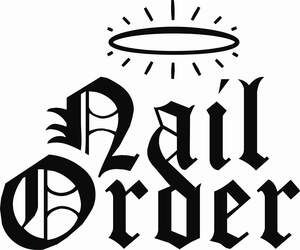

Trade Mark Journal No.2025/051 19 December 2025
UK00004307562 9 December 2025 (3,5,6,7,8,10,11,16,20,21,26,28,44)

- Class 3
- Cosmetics; Skincare cosmetics; Moisturisers [cosmetics]; Cosmetics and cosmetic preparations; Hair cosmetics; Skin fresheners [cosmetics]; Cosmetics for eye-lashes; Cosmetics for suntanning; Anti-aging moisturizers used as cosmetics; Organic cosmetics; Non-medicated cosmetics; Nail cosmetics; Lip cosmetics; Skin moisturizers used as cosmetics; Natural cosmetics; Cosmetics preparations; Mousses [cosmetics]; Make-up palettes containing cosmetics; Tanning gels [cosmetics]; Cosmetics in the form of lotions; Tanning oils [cosmetics]; Beauty care cosmetics; Facial creams [cosmetics]; Colour cosmetics; Self-tanning preparations [cosmetics]; Suncare lotions [for cosmetic use]; Tanning preparations [cosmetics]; Decorative cosmetics; Eyebrow cosmetics; Multifunctional cosmetics; Body creams [cosmetics]; Eye cosmetics; After-sun oils [cosmetics]; Skin masks [cosmetics]; Cosmetics for eye-brows; Tanning milks [cosmetics]; Suntan oils [cosmetics]; Functional cosmetics; Facial gels [cosmetics]; Skin care cosmetics; Fluid creams [cosmetics]; Cosmetics for children; Suntan lotion [cosmetics]; Non-medicated cosmetics and toiletry preparations; Humectant preparations [cosmetics]; Emollient preparations [cosmetics]; Cosmetics in the form of creams; Powder compacts [cosmetics]; Sun-tanning preparations [cosmetics]; Cosmetic hair lotions; Suntanning oil [cosmetics]; After-sun milk [cosmetics]; Colour cosmetics for the skin; After-sun milks [cosmetics]; Cosmetics for use on the skin; Cosmetic moisturisers; Sunscreens [for cosmetic use]; Cosmetic creams and lotions; Cosmetics for the use on the hair; Cosmetic products in the form of aerosols for skincare; Body care cosmetics; Cosmetic creams; Cosmetic soaps; Cosmetic skin fresheners; Cosmetics containing keratin; Cosmetics in the form of powders; Beauty lotions; Nail paint [cosmetics]; Perfume oils for the manufacture of cosmetic preparations; Skin care lotions [cosmetic]; Nail hardeners [cosmetics]; Anti-aging creams [for cosmetic use]; Nail tips [cosmetics]; Sun protecting creams [cosmetics]; Cosmetic products for the shower; Nail primer [cosmetics]; Anti-ageing creams [for cosmetic use]; Perfumed powders [for cosmetic use]; Liners [cosmetics] for the eyes; Skin cleansers [cosmetic]; Moisturising skin lotions [cosmetic]; Cosmetic creams for the skin; Skin creams [cosmetic]; Skin creams [for cosmetic use]; Body and facial gels [cosmetics]; Eyebrow mascara; Eyebrow pencils; Pencils (Eyebrow -); Eyebrow gel; Eyebrow powder; Eyebrow colors; Eyelashes; Hair mascara; Eyebrow styling wax; Eyebrows [false]; Eyes make-up; Eyeliner; Lip makeup; Eyebrow colors in the form of pencils and powders; Facial concealer; Eyes pencils; Eyeliner pencils; Lip pomades; Cosmetic preparations for eye lashes; Eye-shadow; Eye concealers; Cosmetic pencils for cheeks; Eye makeup; Lip pencils; Tints for the hair; Hair serums; Mascara; Eyelid pencils; Eye make-up; Blush pencils; Adhesives for false eyelashes, hair and nails; Hair pomades; Hair balms; Hair balm; Hair colouring; Concealers for lines and wrinkles; Hair moisturisers; Lip tints; Hair glaze; Hair moisturizers; Hair mousse; Colour cosmetics for the eyes; Hair texturizers; Long lash mascaras; Facial makeup; Face blusher; Artificial eyelashes; Eyeshadow; Hair nourishers; Self-adhesive false eyebrows; Eyelid doubling makeup; Eye pencils; Tints for the beard; Eye shadows; Eyelash tint; Hair mousses; Eyelid shadow; Cosmetic eye pencils; Hair chalks; Lip gloss palettes; Eyelashes (Cosmetic preparations for -); Cosmetic preparations for eyelashes; Hair cream; Cosmetics in the form of eye shadow; Hair creams; Hair care serums; Hair powder; Cosmetic creams for firming skin around eyes; Hair wax; Hair glazes; Hair styling waxes; Eye makeup remover; Eye make-up removers; Hair gel; Make-up pencils; Hair relaxers; Eye wrinkle lotions; Hair lighteners; Skin make-up; Eye stylers; Lip cream; Hair care serum; Make-up for the face; Hair curling preparations; Hair bleaches; Lip stains [cosmetics]; Hair colourants; Hair masks; Cosmetic preparations for the hair and scalp; Beauty preparations for the hair; Colouring lotions for the hair; Hair styling gel; Eyelashes (False -); False eyelashes; Mascaras; Eyeliners; Adhesives for affixing false eyelashes; Eyelashes (Adhesives for affixing false -); Eyelash dye; False nails; Nails (False -); Adhesives for affixing artificial eyelashes; Hair sprays; Blusher; Hair frosts; Eyeshadows; Lip glosses; Hair moisturising conditioners; Hair emollients; Blushers; Styling sprays for the hair; Concealers; Hair lacquers; False fingernails; Mousses being hair styling aids; Lipsticks; Hair protection mousse; Artificial nails; Glue for strengthening nails; Nail polish; Nail strengtheners; Nail glitter; Varnish (Nail -); Nail enamels; Nail polish removers; Nail makeup; Preparations for reinforcing the nails; Adhesives for affixing false nails; Nail polish remover; Nail enamel removers; Nail polish removers [cosmetics]; Nail gel; Nail hardeners; Nail varnish removers; Nail whiteners; Nail varnish remover [cosmetics]; Nail conditioners; Gel nail removers; Nail polishing powder; Nail base coat [cosmetics]; Abrasive boards for use on fingernails; Artificial fingernails; Tooth polishes; Decalcomanias for fingernails; Abrasive emery paper for use on fingernails; Nail varnish for cosmetic purposes; Nail cream; Artificial nails for cosmetic purposes; Tooth polish; False toenails; Fingernail decals; Skin, eye and nail care preparations; Fingernail tips; Hair lacquer; Polish; Dressings for nail reconstruction; Artificial fingernails of precious metal; Cosmetic nail care preparations; Leather polishes; Shoe polishes; Adhesives for artificial nails; Nail polish pens; Lotions for strengthening the nails; Nail varnish; Nail enamel; Nail varnishes; Adhesives for fixing false nails; Nail polish remover pens; Preparations for removing gel nails; Nail tips; Nail enamel remover; Nail polish base coat; Nail polish top coat; Nail buffing preparations; Nail varnish removing preparations; Powder for forming sculpted finger nail tips; Adhesives for affixing artificial fingernails; Abrasive paper for use on the fingernails; Nail repair preparations; Cosmetic preparations for nail drying; Cosmetic nail preparations; Nail decolorants; Nail care preparations; Nail art stickers; Polishes; Metal polishes; Metal polish; Body polish; Sun protectors for lips; Lip balm; Lip balms; Lip gloss; Lip rouge; Lip liner; Cheek colors; Cheek colours; Lip conditioners; Lip liners; Lipstick; Lip balm [non-medicated]; Mouth washes; Face and body glitter; Lip balms [non-medicated]; Non-medicated lip balms; Face and body creams; Toning lotion, for the face, body and hands; Blush; Lip neutralizers; Creamy face powder; Liquid soaps for hands and face; Creams (Non-medicated -) for the eyes; Pressed face powder; Lip protectors [cosmetic]; Face and body lotions; Lip polisher; Make-up for the face and body; Face creams; Lip coatings [cosmetic]; Lip coatings (Non-medicated -); Make-up preparations for the face and body; Cosmetics for use in the treatment of wrinkled skin; Lip protectors (Non-medicated -); Face powders; Skin balms [cosmetic]; Cosmetic creams for dry skin; Skin emollients; Lip care preparations; Lip stains for cosmetic purposes; Face gels; Loose face powder; Skin lotion; Skin moisturizer; Lotions for face and body care; Cleansing products for the eyes; Face and body masks; Beard balm; Moistened tooth powder; Face powder; Face powders [for cosmetic use]; Skin balms (Non-medicated -); Non-medicated skin balms; Cosmetic face powders; Skin moisturiser; Skin cream; Face cream (Non-medicated -); Moisturizing preparations for the skin; Moisturising skin creams [cosmetic]; Skin moisturizers; Skin moisturisers; Skin creams; Creams for the skin; Face wipes; Face powder [for cosmetic use]; Milky lotions for skin care; Sun tan lotion; Sun tan gel; Sun tan oil; Sun tan milk; Suntan lotions; Suntan creams; Creams for tanning the skin; Suntan creams [self-tanning creams]; Sun bronzers; Cosmetic suntan lotions; Tanning creams; SPF sun block sprays; Hair lotion; Sunscreen cream; Sunblock; Cream for whitening the skin; Whitening the skin (Cream for -); Hair spray; Camouflage cream; Sun-tanning lotions; Cosmetics for protecting the skin from sunburn; Skin cream [for cosmetic use]; Self tanning lotions [cosmetic]; Self tanning creams [cosmetic]; Sun-tanning creams; Scented body spray; Hair styling spray; Moisturising body lotion [cosmetic]; Oils for moisturising the skin after sunbathing; Cosmetic sun milk lotions; Skin lotions; Lotions for the skin; Sun-block lotions; Sunscreen; Body mask lotion; Patches containing sun screen and sun block for use on the skin; Skin cleansing lotion; Body mask cream; Fair complexion cream; Skin cleansing cream; Sun-tanning creams and lotions; Cosmetic white face powder; Sunscreen lotions; Sun-tanning gels; Body lotion; Cosmetic suntan preparations; Body spray; Hair lotions; Body cream; Sun creams [for cosmetic use]; Hair color removers; Facial lotion; Sunscreen creams; Sunscreen [for cosmetic use]; Henna [cosmetic dye]; Hair styling lotions; Sun creams; Water-resistant sunscreen; Body oil spray; After-sun lotions; Sun-tanning oils; Sunscreen creams [for cosmetic use]; Waterproof sunscreen.
- Class 5
- Anti-fungal dermatological preparations for use on the nails; Nail fungus treatment preparations; Preparations for preventing nail biting; Nail sanitizing preparations.
- Class 6
- Tacks [nails]; Nails of metal; Cut nails; Horseshoe nails.
- Class 7
- Pneumatic nail guns; Nail pullers, electric.
- Class 8
- Nail clippers; Nail nippers; Nail skin treatment trimmers; Nail buffers; Fingernail clippers; Nail files; Nail extractors; Nail nippers [hand tools]; Nail drawers [hand tools]; Manicure sets; Cuticle tweezers; Nail polishers (Non-electric -); Nail files, electric; Manicure implements; Cuticle nippers; Hair clippers for babies; Nail buffers for use in manicure; Nail scissors; Nail punches; Manicure and pedicure tools; Hand-operated nail clippers for pets; Extractors (Nail -); Cuticle scissors; Nail polishers (Electric -); Electric nail buffers; Electric nail files; Nail files, non-electric.
- Class 10
- Intramedullary nails; Femoral nails; Centro-medullary nails for femur; Centro-medullary nails for tibia; Nail pinches for medical use.
- Class 11
- Nail lamps; Sun tanning appliances; Tanning booths; Tanning lamps; Tanning apparatus [sun lamps]; Lamp bulbs; Desk lamps; Sun lamps for tanning purposes; Floor lamps.
- Class 16
- Nail stencils.
- Class 20
- Nails, not of metal.
- Class 21
- Trays for use in fingernail polishing.
- Class 26
- Sticks for use in decorating the hair; Hair pins; Pins for the hair.
- Class 28
- Toy artificial fingernails.
- Class 44
- Manicure and pedicure services.
Join The Nail Order Ltd